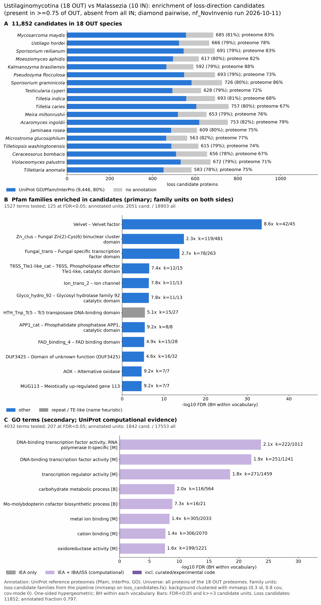

malassezia vs ustilaginomycotina: functional enrichment (loss)
One-sided hypergeometric test per term; Benjamini-Hochberg FDR within each scope, level and vocabulary. Candidates are the loss candidates: gene families present in the OUT group and absent from the IN group. Universe: proteome. Background clustered: True (120231 sequences in 42252 clusters, mmseqs easy-cluster --min-seq-id 0.3 -c 0.8). Family level: one unit per candidate family and per background cluster.
Sources: Pfam: 2026-01-27-Pfam38.2; InterPro entries: 110.0; GO: releases/2026-07-26; analysis generated 2026-10-12T18:32:53. Source tables: studies/fungi/malassezia_vs_ustilaginomycotina/analysis/enrichment/outputs/loss/proteome_clustered.
Full record: PROVENANCE. Run report: report.html.
- Annotation provenance is not fully recorded: PROVENANCE.yaml lists the per-species annotation files and their checksums, but not the UniProt release they come from.
- GO results are secondary. GO annotations include computational evidence (IEA, IBA); the GO evidence column shows if a term has non-IEA support.
- Candidate families (pipeline clustering of candidates) and background clusters (mmseqs clustering of the background proteome) are made by different runs, so family-level counts are not fully comparable.
Summary figure

Annotation coverage
Fraction of proteins with at least one term per vocabulary. Universe = all proteins of the species; candidates = the candidate set.
| Species | Set | Proteins | Pfam | Pfam clan | InterPro | GO | Any |
|---|---|---|---|---|---|---|---|
| Mycomayd | universe | 6788 | 77.0% | 62.2% | 82.2% | 73.8% | 82.7% |
| Mycomayd | candidates | 685 | 71.5% | 60.4% | 80.6% | 62.9% | 81.3% |
| Ustihord | universe | 7110 | 72.5% | 58.8% | 78.2% | 68.1% | 78.4% |
| Ustihord | candidates | 666 | 68.8% | 58.1% | 78.5% | 58.9% | 78.7% |
| Sporreil | universe | 6673 | 78.0% | 63.1% | 83.2% | 73.6% | 83.4% |
| Sporreil | candidates | 691 | 70.0% | 59.2% | 78.6% | 59.8% | 79.0% |
| Moesaphi | universe | 6011 | 76.6% | 62.7% | 81.8% | 72.4% | 81.9% |
| Moesaphi | candidates | 617 | 71.0% | 61.1% | 80.2% | 59.3% | 80.4% |
| Kalmbras | universe | 5650 | 82.9% | 67.8% | 88.0% | 78.7% | 88.3% |
| Kalmbras | candidates | 592 | 70.1% | 58.1% | 78.5% | 58.8% | 78.5% |
| Pseufloc | universe | 7767 | 67.8% | 54.9% | 72.9% | 63.8% | 73.0% |
| Pseufloc | candidates | 693 | 69.4% | 57.9% | 78.9% | 59.3% | 79.1% |
| Sporgram | universe | 6585 | 79.8% | 65.1% | 85.6% | 75.2% | 85.9% |
| Sporgram | candidates | 726 | 70.8% | 59.1% | 79.8% | 60.3% | 80.3% |
| Testcype | universe | 7036 | 67.9% | 55.0% | 72.3% | 64.7% | 72.5% |
| Testcype | candidates | 628 | 68.3% | 57.5% | 78.0% | 58.6% | 78.5% |
| Tillindi | universe | 9656 | 61.1% | 50.2% | 68.1% | 56.8% | 68.4% |
| Tillindi | candidates | 693 | 69.8% | 56.7% | 80.1% | 59.0% | 80.5% |
| Tillcari | universe | 9913 | 59.3% | 48.4% | 66.8% | 54.9% | 67.0% |
| Tillcari | candidates | 757 | 68.3% | 56.4% | 79.7% | 58.0% | 79.9% |
| Meirmilt | universe | 7452 | 71.5% | 58.6% | 76.2% | 66.4% | 76.4% |
| Meirmilt | candidates | 653 | 69.4% | 58.7% | 79.3% | 58.4% | 79.5% |
| Acaringo | universe | 8019 | 72.8% | 59.9% | 78.4% | 67.5% | 78.6% |
| Acaringo | candidates | 753 | 73.7% | 62.2% | 81.9% | 60.7% | 82.2% |
| Jamirose | universe | 6858 | 69.7% | 57.0% | 74.8% | 65.4% | 75.1% |
| Jamirose | candidates | 609 | 70.0% | 57.0% | 79.5% | 57.0% | 80.0% |
| Micrgluc | universe | 6679 | 72.0% | 58.6% | 77.2% | 67.9% | 77.4% |
| Micrgluc | candidates | 563 | 72.5% | 59.3% | 82.1% | 60.2% | 82.4% |
| Tillwash | universe | 7005 | 68.8% | 55.7% | 74.2% | 64.6% | 74.4% |
| Tillwash | candidates | 615 | 69.8% | 58.5% | 79.0% | 57.4% | 79.3% |
| Cerabomb | universe | 8017 | 61.2% | 49.8% | 66.4% | 57.3% | 66.6% |
| Cerabomb | candidates | 656 | 69.4% | 57.8% | 77.1% | 56.2% | 77.7% |
| Violpalu | universe | 8058 | 65.6% | 53.4% | 70.8% | 62.1% | 71.1% |
| Violpalu | candidates | 672 | 69.9% | 58.5% | 78.9% | 58.3% | 79.2% |
| Tillanom | universe | 6806 | 69.4% | 55.6% | 74.9% | 66.2% | 75.1% |
| Tillanom | candidates | 583 | 66.4% | 55.4% | 77.2% | 56.6% | 77.5% |
| ALL_OUT | universe | 132083 | 70.0% | 57.0% | 75.5% | 65.8% | 75.8% |
| ALL_OUT | candidates | 11852 | 70.0% | 58.5% | 79.3% | 58.9% | 79.7% |
Tests summary
Per vocabulary: terms with FDR < 0.05 / terms tested. Protein level counts proteins; family level counts candidate families and background clusters.
| Scope | Level | Cand. units | Pfam sig / tested | Pfam clan sig / tested | InterPro sig / tested | GO sig / tested |
|---|---|---|---|---|---|---|
| whole_set | family | 3339 | 125 / 1527 | 38 / 375 | 255 / 3210 | 207 / 4032 |
| whole_set | protein | 11852 | 444 / 4233 | 110 / 493 | 925 / 9055 | 654 / 6399 |
| Acaringo | family | 710 | 7 / 252 | 7 / 208 | 23 / 673 | 19 / 2175 |
| Acaringo | protein | 753 | 12 / 308 | 9 / 216 | 29 / 804 | 37 / 2257 |
| Cerabomb | family | 646 | 3 / 211 | 7 / 198 | 15 / 597 | 11 / 1851 |
| Cerabomb | protein | 656 | 3 / 232 | 9 / 201 | 15 / 649 | 13 / 1890 |
| Jamirose | family | 605 | 2 / 204 | 3 / 196 | 8 / 558 | 7 / 2102 |
| Jamirose | protein | 609 | 2 / 234 | 5 / 203 | 8 / 620 | 6 / 2137 |
| Kalmbras | family | 583 | 1 / 218 | 5 / 192 | 10 / 592 | 15 / 2101 |
| Kalmbras | protein | 592 | 1 / 241 | 7 / 196 | 13 / 648 | 24 / 2158 |
| Meirmilt | family | 610 | 6 / 218 | 6 / 194 | 16 / 587 | 14 / 2146 |
| Meirmilt | protein | 653 | 10 / 266 | 9 / 203 | 24 / 705 | 28 / 2223 |
| Micrgluc | family | 549 | 0 / 197 | 3 / 197 | 1 / 559 | 6 / 2077 |
| Micrgluc | protein | 563 | 0 / 222 | 3 / 204 | 1 / 627 | 7 / 2118 |
| Moesaphi | family | 599 | 4 / 207 | 8 / 190 | 15 / 582 | 16 / 1975 |
| Moesaphi | protein | 617 | 5 / 220 | 9 / 196 | 18 / 621 | 19 / 2010 |
| Mycomayd | family | 660 | 2 / 240 | 7 / 202 | 15 / 639 | 28 / 2271 |
| Mycomayd | protein | 685 | 6 / 268 | 12 / 209 | 20 / 703 | 28 / 2328 |
| Pseufloc | family | 666 | 3 / 234 | 7 / 204 | 15 / 633 | 13 / 2041 |
| Pseufloc | protein | 693 | 7 / 279 | 11 / 213 | 21 / 724 | 15 / 2095 |
| Sporgram | family | 690 | 6 / 236 | 9 / 201 | 20 / 637 | 19 / 1925 |
| Sporgram | protein | 726 | 11 / 273 | 15 / 210 | 31 / 727 | 28 / 1992 |
| Sporreil | family | 678 | 3 / 239 | 10 / 200 | 17 / 635 | 21 / 2185 |
| Sporreil | protein | 691 | 3 / 264 | 12 / 206 | 17 / 692 | 23 / 2247 |
| Testcype | family | 615 | 3 / 201 | 7 / 196 | 8 / 571 | 16 / 2108 |
| Testcype | protein | 628 | 3 / 224 | 8 / 202 | 10 / 632 | 16 / 2149 |
| Tillanom | family | 577 | 2 / 185 | 5 / 193 | 6 / 545 | 12 / 2108 |
| Tillanom | protein | 583 | 4 / 215 | 7 / 200 | 10 / 618 | 11 / 2163 |
| Tillcari | family | 683 | 7 / 271 | 9 / 207 | 22 / 711 | 24 / 1958 |
| Tillcari | protein | 757 | 16 / 326 | 11 / 220 | 40 / 828 | 33 / 2040 |
| Tillindi | family | 649 | 6 / 253 | 11 / 204 | 18 / 662 | 16 / 1926 |
| Tillindi | protein | 693 | 15 / 306 | 13 / 211 | 35 / 783 | 27 / 1993 |
| Tillwash | family | 608 | 4 / 201 | 8 / 189 | 16 / 571 | 7 / 2084 |
| Tillwash | protein | 615 | 4 / 225 | 9 / 195 | 17 / 637 | 12 / 2127 |
| Ustihord | family | 660 | 3 / 235 | 8 / 199 | 14 / 628 | 13 / 2171 |
| Ustihord | protein | 666 | 3 / 262 | 9 / 203 | 14 / 695 | 11 / 2229 |
| Violpalu | family | 655 | 2 / 244 | 7 / 205 | 11 / 672 | 18 / 1922 |
| Violpalu | protein | 672 | 3 / 270 | 10 / 211 | 12 / 739 | 23 / 1980 |
Top 25 Pfam terms (whole set, family level)
25 rows shown, ordered by FDR then p-value; 25 have FDR < 0.05 (bold).
| Term | Name | k / N cand. | n / M bg | Fold | FDR (BH) |
|---|---|---|---|---|---|
| PF11754 | Velvet: Velvet factor | 42 / 2051 | 45 / 18903 | 8.602 | 3.29e-34 |
| PF00172 | Zn_clus: Fungal Zn(2)-Cys(6) binuclear cluster domain | 119 / 2051 | 481 / 18903 | 2.28 | 1.54e-15 |
| PF04082 | Fungal_trans: Fungal specific transcription factor domain | 78 / 2051 | 263 / 18903 | 2.733 | 1.83e-14 |
| PF09994 | T6SS_Tle1-like_cat: T6SS, Phospholipase effector Tle1-like, catalytic domain | 12 / 2051 | 15 / 18903 | 7.373 | 3.28e-07 |
| PF07885 | Ion_trans_2: Ion channel | 11 / 2051 | 13 / 18903 | 7.799 | 3.86e-07 |
| PF07971 | Glyco_hydro_92: Glycosyl hydrolase family 92 catalytic domain | 11 / 2051 | 13 / 18903 | 7.799 | 3.86e-07 |
| PF03221 | HTH_Tnp_Tc5: Tc5 transposase DNA-binding domain | 15 / 2051 | 27 / 18903 | 5.12 | 3.44e-06 |
| PF09949 | APP1_cat: Phosphatidate phosphatase APP1, catalytic domain | 8 / 2051 | 8 / 18903 | 9.216 | 3.62e-06 |
| PF01565 | FAD_binding_4: FAD binding domain | 15 / 2051 | 28 / 18903 | 4.937 | 5.18e-06 |
| PF11905 | DUF3425: Domain of unknown function (DUF3425) | 16 / 2051 | 32 / 18903 | 4.608 | 5.84e-06 |
| PF01786 | AOX: Alternative oxidase | 7 / 2051 | 7 / 18903 | 9.216 | 2.06e-05 |
| PF13455 | MUG113: Meiotically up-regulated gene 113 | 7 / 2051 | 7 / 18903 | 9.216 | 2.06e-05 |
| PF14976 | YPEH2ZP: Yippee homolog 2 zinc finger protein | 7 / 2051 | 7 / 18903 | 9.216 | 2.06e-05 |
| PF00636 | Ribonuclease_3: Ribonuclease III domain | 12 / 2051 | 21 / 18903 | 5.267 | 2.82e-05 |
| PF04193 | PQ-loop: PQ loop repeat | 15 / 2051 | 32 / 18903 | 4.32 | 2.82e-05 |
| PF02515 | CoA_transf_3: CoA-transferase family III | 9 / 2051 | 12 / 18903 | 6.912 | 2.82e-05 |
| PF08031 | BBE: Berberine and berberine like | 9 / 2051 | 12 / 18903 | 6.912 | 2.82e-05 |
| PF13911 | AhpC-TSA_2: AhpC/TSA antioxidant enzyme | 9 / 2051 | 12 / 18903 | 6.912 | 2.82e-05 |
| PF00892 | EamA: EamA-like transporter family | 8 / 2051 | 10 / 18903 | 7.373 | 5.33e-05 |
| PF09764 | Nt_Gln_amidase: N-terminal glutamine amidase | 8 / 2051 | 10 / 18903 | 7.373 | 5.33e-05 |
| PF13532 | 2OG-FeII_Oxy_2: 2OG-Fe(II) oxygenase superfamily | 13 / 2051 | 26 / 18903 | 4.608 | 5.38e-05 |
| PF00616 | RasGAP: GTPase-activator protein for Ras-like GTPase | 9 / 2051 | 13 / 18903 | 6.381 | 6.77e-05 |
| PF10342 | Kre9_KNH: Kre9/KNH-like N-terminal Ig-like domain | 12 / 2051 | 23 / 18903 | 4.809 | 7.35e-05 |
| PF13881 | Rad60-SLD_2: Ubiquitin-2 like Rad60 SUMO-like | 7 / 2051 | 8 / 18903 | 8.064 | 7.46e-05 |
| PF13915 | DUF4210: Domain of unknown function (DUF4210) | 7 / 2051 | 8 / 18903 | 8.064 | 7.46e-05 |
Top 25 InterPro terms (whole set, family level)
25 rows shown, ordered by FDR then p-value; 25 have FDR < 0.05 (bold).
| Term | Name | k / N cand. | n / M bg | Fold | FDR (BH) |
|---|---|---|---|---|---|
| IPR021740 | Family:Velvet factor | 42 / 2405 | 44 / 21774 | 8.642 | 1.15e-34 |
| IPR037525 | Domain:Velvet domain | 42 / 2405 | 45 / 21774 | 8.45 | 5.12e-34 |
| IPR038491 | Homologous_superfamily:Velvet domain superfamily | 42 / 2405 | 45 / 21774 | 8.45 | 5.12e-34 |
| IPR036864 | Homologous_superfamily:Zn(2)-C6 fungal-type DNA-binding domain superfamily | 153 / 2405 | 617 / 21774 | 2.245 | 1.06e-19 |
| IPR001138 | Domain:Zn(2)Cys(6) fungal-type DNA-binding domain | 152 / 2405 | 614 / 21774 | 2.241 | 1.40e-19 |
| IPR007219 | Domain:Xylanolytic transcriptional activator-like, regulatory domain | 81 / 2405 | 282 / 21774 | 2.601 | 1.18e-13 |
| IPR045877 | Family:RNA-binding protein ZFP36-like | 13 / 2405 | 13 / 21774 | 9.054 | 1.62e-10 |
| IPR017853 | Homologous_superfamily:Glycoside hydrolase superfamily | 57 / 2405 | 192 / 21774 | 2.688 | 5.39e-10 |
| IPR050416 | Family:FAD-linked Oxidoreductases in Biosynthetic Pathways | 13 / 2405 | 17 / 21774 | 6.923 | 1.95e-07 |
| IPR018712 | Domain:T6SS, Phospholipase effector Tle1-like, catalytic domain | 12 / 2405 | 15 / 21774 | 7.243 | 3.41e-07 |
| IPR003280 | Family:Two pore domain potassium channel | 11 / 2405 | 13 / 21774 | 7.661 | 4.55e-07 |
| IPR012939 | Domain:Glycosyl hydrolase family 92 | 11 / 2405 | 13 / 21774 | 7.661 | 4.55e-07 |
| IPR013099 | Domain:Potassium channel domain | 11 / 2405 | 13 / 21774 | 7.661 | 4.55e-07 |
| IPR040410 | Family:UPF0658 Golgi apparatus membrane protein | 9 / 2405 | 9 / 21774 | 9.054 | 5.54e-07 |
| IPR050883 | Family:Peptide-N(4)-(N-acetyl-beta-glucosaminyl)asparagine amidase | 10 / 2405 | 11 / 21774 | 8.231 | 5.63e-07 |
| IPR036318 | Homologous_superfamily:FAD-binding, type PCMH-like superfamily | 17 / 2405 | 31 / 21774 | 4.965 | 5.95e-07 |
| IPR051615 | Family:Transcriptional Regulatory Elements | 20 / 2405 | 44 / 21774 | 4.115 | 1.62e-06 |
| IPR050830 | Family:Fungal fatty acid synthase | 12 / 2405 | 17 / 21774 | 6.391 | 2.08e-06 |
| IPR016166 | Domain:FAD-binding domain, PCMH-type | 16 / 2405 | 30 / 21774 | 4.829 | 2.39e-06 |
| IPR016169 | Homologous_superfamily:FAD-binding, type PCMH, subdomain 2 | 16 / 2405 | 30 / 21774 | 4.829 | 2.39e-06 |
| IPR026050 | Family:C1GALT1/C1GALT1-specific chaperone 1 | 9 / 2405 | 10 / 21774 | 8.148 | 2.55e-06 |
| IPR039360 | Family:Ras GTPase-activating protein | 9 / 2405 | 10 / 21774 | 8.148 | 2.55e-06 |
| IPR019236 | Domain:Phosphatidate phosphatase APP1, catalytic domain | 8 / 2405 | 8 / 21774 | 9.054 | 2.55e-06 |
| IPR032870 | Family:Alpha-ketoglutarate-dependent dioxygenase alkB homologue 7-like | 8 / 2405 | 8 / 21774 | 9.054 | 2.55e-06 |
| IPR051601 | Family:Serine protease/Carboxylesterase S33 | 8 / 2405 | 8 / 21774 | 9.054 | 2.55e-06 |
Top 15 GO terms (whole set, family level) — secondary, computational evidence (IEA/IBA) included
15 rows shown, ordered by FDR then p-value; 15 have FDR < 0.05 (bold).
| Term | Name | k / N cand. | n / M bg | Fold | FDR (BH) | GO evidence | Families with non-IEA |
|---|---|---|---|---|---|---|---|
| GO:0000981 | molecular_function:DNA-binding transcription factor activity, RNA polymerase II-specific | 222 / 1842 | 1012 / 17553 | 2.09 | 1.77e-24 | has_non_IEA | 18 |
| GO:0003700 | molecular_function:DNA-binding transcription factor activity | 251 / 1842 | 1241 / 17553 | 1.927 | 7.50e-23 | has_non_IEA | 22 |
| GO:0140110 | molecular_function:transcription regulator activity | 271 / 1842 | 1459 / 17553 | 1.77 | 2.77e-19 | has_non_IEA | 22 |
| GO:0005975 | biological_process:carbohydrate metabolic process | 116 / 1842 | 564 / 17553 | 1.96 | 5.83e-10 | has_non_IEA | 17 |
| GO:0006777 | biological_process:Mo-molybdopterin cofactor biosynthetic process | 16 / 1842 | 21 / 17553 | 7.26 | 1.43e-09 | has_non_IEA | 2 |
| GO:0019720 | biological_process:Mo-molybdopterin cofactor metabolic process | 16 / 1842 | 21 / 17553 | 7.26 | 1.43e-09 | has_non_IEA | 2 |
| GO:0032324 | biological_process:molybdopterin cofactor biosynthetic process | 16 / 1842 | 21 / 17553 | 7.26 | 1.43e-09 | has_non_IEA | 2 |
| GO:0043545 | biological_process:molybdopterin cofactor metabolic process | 16 / 1842 | 22 / 17553 | 6.93 | 3.67e-09 | has_non_IEA | 2 |
| GO:0051189 | biological_process:prosthetic group metabolic process | 16 / 1842 | 22 / 17553 | 6.93 | 3.67e-09 | has_non_IEA | 2 |
| GO:0046872 | molecular_function:metal ion binding | 305 / 1842 | 2033 / 17553 | 1.43 | 4.21e-09 | has_non_IEA | 3 |
| GO:0043169 | molecular_function:cation binding | 306 / 1842 | 2070 / 17553 | 1.409 | 2.03e-08 | has_non_IEA | 3 |
| GO:0016491 | molecular_function:oxidoreductase activity | 199 / 1842 | 1221 / 17553 | 1.553 | 2.47e-08 | has_non_IEA | 15 |
| GO:0006516 | biological_process:glycoprotein catabolic process | 12 / 1842 | 14 / 17553 | 8.168 | 3.98e-08 | has_non_IEA | 3 |
| GO:0005249 | molecular_function:voltage-gated potassium channel activity | 11 / 1842 | 13 / 17553 | 8.063 | 2.13e-07 | IEA_only | 0 |
| GO:0005267 | molecular_function:potassium channel activity | 11 / 1842 | 13 / 17553 | 8.063 | 2.13e-07 | has_non_IEA | 1 |
Actin cytoskeleton controls
Known actin-related families and how many of their proteins pass each filter. Protein ID columns are left out.
| control | pfam_ids | desc_regex | OUT_universe | OUT_in_matrix | OUT_pass_outgroup_rule | candidates | near_miss_in1 | near_miss_in2 | n_Mycomayd | n_Ustihord | n_Sporreil | n_Moesaphi | n_Kalmbras | n_Pseufloc | n_Sporgram | n_Testcype | n_Tillindi | n_Tillcari | n_Meirmilt | n_Acaringo | n_Jamirose | n_Micrgluc | n_Tillwash | n_Cerabomb | n_Violpalu | n_Tillanom | n_Malaglob | n_Malasymp | n_Malarest | n_Malafurf | n_Malapach | n_Malavesp | n_Malanana | n_Malabras | n_Malajapo | n_Malaarun |
|---|---|---|---|---|---|---|---|---|---|---|---|---|---|---|---|---|---|---|---|---|---|---|---|---|---|---|---|---|---|---|---|---|---|---|---|---|
| Arp2/3 ARPC2 (P34-Arc) | PF04045 | 18 | 18 | 18 | 0 | 0 | 0 | 1 | 1 | 1 | 1 | 1 | 1 | 1 | 1 | 1 | 1 | 1 | 1 | 1 | 1 | 1 | 1 | 1 | 1 | 1 | 1 | 1 | 1 | 1 | 1 | 1 | 1 | 1 | 1 | |
| Arp2/3 ARPC3 (P21-Arc) | PF04062 | 18 | 18 | 18 | 0 | 0 | 0 | 1 | 1 | 1 | 1 | 1 | 1 | 1 | 1 | 1 | 1 | 1 | 1 | 1 | 1 | 1 | 1 | 1 | 1 | 1 | 1 | 1 | 1 | 1 | 1 | 1 | 1 | 1 | 1 | |
| Arp2/3 ARPC4 | PF05856 | 16 | 16 | 16 | 0 | 0 | 0 | 1 | 0 | 1 | 0 | 1 | 1 | 1 | 1 | 1 | 1 | 1 | 1 | 1 | 1 | 1 | 1 | 1 | 1 | 0 | 1 | 1 | 1 | 1 | 1 | 1 | 1 | 1 | 1 | |
| Arp2/3 ARPC5 (P16-Arc) | PF04699 | 18 | 18 | 18 | 0 | 0 | 0 | 1 | 1 | 1 | 1 | 1 | 1 | 1 | 1 | 1 | 1 | 1 | 1 | 1 | 1 | 1 | 1 | 1 | 1 | 1 | 1 | 1 | 1 | 1 | 1 | 1 | 1 | 1 | 1 | |
| Arp2/3 ARPC1 (description only) | arp2/3 complex.*(41|p41|subunit 1)|ARPC1 | 18 | 18 | 18 | 0 | 0 | 0 | 1 | 1 | 1 | 1 | 1 | 1 | 1 | 1 | 1 | 1 | 1 | 1 | 1 | 1 | 1 | 1 | 1 | 1 | 1 | 1 | 1 | 1 | 1 | 1 | 1 | 1 | 1 | 1 | |
| Arp2 / Arp3 (description only) | actin-related protein (2|3)\b|\bARP[23]\b | 110 | 110 | 110 | 0 | 0 | 0 | 7 | 5 | 6 | 6 | 6 | 6 | 7 | 5 | 7 | 7 | 6 | 6 | 6 | 6 | 6 | 6 | 6 | 6 | 6 | 8 | 7 | 7 | 6 | 4 | 7 | 7 | 7 | 7 | |
| WAVE complex NCKAP1 | PF09735 | 0 | 0 | 0 | 0 | 0 | 0 | 0 | 0 | 0 | 0 | 0 | 0 | 0 | 0 | 0 | 0 | 0 | 0 | 0 | 0 | 0 | 0 | 0 | 0 | 0 | 0 | 0 | 0 | 0 | 0 | 0 | 0 | 0 | 0 | |
| WAVE complex CYFIP (FragX_IP) | PF05994 | 0 | 0 | 0 | 0 | 0 | 0 | 0 | 0 | 0 | 0 | 0 | 0 | 0 | 0 | 0 | 0 | 0 | 0 | 0 | 0 | 0 | 0 | 0 | 0 | 0 | 0 | 0 | 0 | 0 | 0 | 0 | 0 | 0 | 0 | |
| WAVE complex ABI | PF07815|PF27594 | 0 | 0 | 0 | 0 | 0 | 0 | 0 | 0 | 0 | 0 | 0 | 0 | 0 | 0 | 0 | 0 | 0 | 0 | 0 | 0 | 0 | 0 | 0 | 0 | 0 | 0 | 0 | 0 | 0 | 0 | 0 | 0 | 0 | 0 | |
| SCAR/WAVE (SCAR_helical) | PF27569 | 0 | 0 | 0 | 0 | 0 | 0 | 0 | 0 | 0 | 0 | 0 | 0 | 0 | 0 | 0 | 0 | 0 | 0 | 0 | 0 | 0 | 0 | 0 | 0 | 0 | 0 | 0 | 0 | 0 | 0 | 0 | 0 | 0 | 0 | |
| WASP family (WH1) | PF00568 | 17 | 17 | 17 | 0 | 0 | 0 | 1 | 1 | 1 | 0 | 1 | 1 | 1 | 1 | 1 | 1 | 1 | 1 | 1 | 1 | 1 | 1 | 1 | 1 | 1 | 1 | 0 | 1 | 1 | 1 | 1 | 1 | 1 | 1 | |
| WH2 motif (WASP, WAVE, others) | PF02205 | 30 | 30 | 19 | 0 | 0 | 0 | 2 | 2 | 2 | 1 | 1 | 2 | 2 | 2 | 1 | 1 | 1 | 2 | 3 | 2 | 1 | 2 | 2 | 1 | 1 | 2 | 1 | 3 | 2 | 1 | 1 | 2 | 2 | 1 | |
| Formin FH2 | PF02181 | 36 | 36 | 36 | 7 | 2 | 0 | 2 | 2 | 2 | 2 | 2 | 2 | 2 | 2 | 2 | 2 | 2 | 2 | 2 | 2 | 2 | 2 | 2 | 2 | 1 | 1 | 1 | 1 | 1 | 1 | 1 | 1 | 1 | 1 | |
| Formin Drf_GBD / Drf_FH3 / Drf_DAD | PF06371|PF06367|PF06345 | 37 | 37 | 37 | 5 | 2 | 0 | 2 | 2 | 2 | 2 | 2 | 2 | 2 | 2 | 2 | 2 | 2 | 2 | 2 | 2 | 3 | 2 | 2 | 2 | 2 | 2 | 2 | 1 | 2 | 1 | 2 | 1 | 2 | 1 | |
| Ena/VASP (VASP_tetra) | PF08776 | 0 | 0 | 0 | 0 | 0 | 0 | 0 | 0 | 0 | 0 | 0 | 0 | 0 | 0 | 0 | 0 | 0 | 0 | 0 | 0 | 0 | 0 | 0 | 0 | 0 | 0 | 0 | 0 | 0 | 0 | 0 | 0 | 0 | 0 | |
| Coronin (description only) | coronin | 25 | 25 | 23 | 0 | 0 | 0 | 1 | 1 | 1 | 1 | 1 | 2 | 1 | 1 | 2 | 2 | 2 | 2 | 1 | 1 | 1 | 2 | 1 | 2 | 1 | 1 | 1 | 1 | 1 | 1 | 1 | 1 | 1 | 1 | |
| Cortactin (HS1_rep) | PF02218 | 0 | 0 | 0 | 0 | 0 | 0 | 0 | 0 | 0 | 0 | 0 | 0 | 0 | 0 | 0 | 0 | 0 | 0 | 0 | 0 | 0 | 0 | 0 | 0 | 0 | 0 | 0 | 0 | 0 | 0 | 0 | 0 | 0 | 0 | |
| Myosin 2 tail (Myosin_tail_1) | PF01576 | 2 | 2 | 2 | 0 | 0 | 0 | 0 | 0 | 0 | 0 | 0 | 0 | 0 | 0 | 0 | 0 | 0 | 1 | 0 | 0 | 0 | 1 | 0 | 0 | 0 | 0 | 0 | 0 | 0 | 0 | 0 | 0 | 0 | 0 | |
| Myosin head (all myosins) | PF00063 | 80 | 80 | 80 | 0 | 0 | 0 | 4 | 4 | 4 | 3 | 4 | 5 | 4 | 4 | 5 | 5 | 4 | 4 | 5 | 5 | 5 | 5 | 5 | 5 | 5 | 5 | 5 | 5 | 5 | 5 | 5 | 4 | 5 | 5 |
Page written by bin/generate_enrichment_page.py.